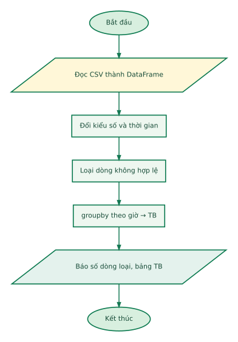

Khóa học / Mô-đun 3 / Bài 12
01 Mục tiêu và kiến thức tiên quyết
- Đọc dữ liệu bằng pandas.read_csv và chuyển đổi cột số, thời gian.
- Giải thích chính sách xử lý missing/invalid, không tự thay số nếu thiếu căn cứ.
- Tổng hợp trung bình theo giờ và công bố số mẫu bị loại.
Kiến thức tiên quyết: bài trước, kiến thức lập trình tương ứng.
02 Tình huống kỹ thuật
Bảng CSV gồm nhiệt độ, dòng điện và thời điểm có dòng thiếu hoặc sai định dạng. Dùng pandas để kiểm tra chất lượng dữ liệu, lọc và tính thống kê theo giờ.
data/nhiet_do_mau.csv gồm timestamp, temp_c và current_a, có một dòng temp_c sai.
Số dòng ban đầu, số dòng sạch, bảng giá trị trung bình theo giờ.
03 Kiến thức và thuật ngữ cốt lõi
DataFrame
DataFrame là bảng dữ liệu có cột, chỉ số và kiểu dữ liệu; đọc CSV không bảo đảm cột temp_c đã được suy luận đúng kiểu số.
Làm sạch có chủ đích
pd.to_numeric(errors="coerce") tạo NaN cho giá trị không chuyển được. dropna() làm giảm số quan sát; phải ghi rõ số dòng ban đầu và số dòng còn lại.
Dữ liệu ngoài miền
Việc giới hạn −40…125 °C ở ví dụ này là quy tắc chất lượng của bài tập, không được nhầm với thông số của một cảm biến cụ thể.
Tổng hợp thời gian
Chuyển timestamp sang datetime, tạo cột hour và groupby để tính trung bình. Chỉ tổng hợp nếu múi giờ, tần suất lấy mẫu và quy tắc thiếu dữ liệu phù hợp.
04 Xây dựng và kiểm tra thuật toán
Trước khi xem chương trình, hãy đọc dữ liệu đầu vào, chọn điều kiện rẽ nhánh hoặc lặp, rồi dự đoán kết quả. Mã giả mô tả ý nghĩa thuật toán; không phải cú pháp Python thực thi được.

Mã giả
Lần vết các bước phân tích
Đây là lần vết các dòng mã giả, không phải trình thông dịch Python. Tự kiểm tra nhánh điều kiện bằng bảng ca kiểm thử ở mục 07.
05 Chương trình Python đã kiểm tra
Đọc mã, dự đoán kết quả và chạy tệp bai_12.py trong thư mục code. Các mã bài 9 trở lên có thể cần dữ liệu đi kèm từ thư mục data.
from pathlib import Path
import pandas as pd
root = Path(__file__).resolve().parent.parent
df = pd.read_csv(root / "data" / "nhiet_do_mau.csv")
so_goc = len(df)
df["timestamp"] = pd.to_datetime(df["timestamp"], errors="coerce")
df["temp_c"] = pd.to_numeric(df["temp_c"], errors="coerce")
df = df.dropna(subset=["timestamp", "temp_c"]).copy()
df = df[df["temp_c"].between(-40, 125)].copy()
df["hour"] = df["timestamp"].dt.floor("h")
nhom = df.groupby("hour")["temp_c"].mean()
print(f"Goc={so_goc}, hop le={len(df)}, loai={so_goc-len(df)}")
print(nhom.round(2).to_string())
06 Thử nghiệm tham số có hướng dẫn
Thay đổi đầu vào để kiểm tra trực giác và đối chiếu với kết quả dự đoán. Trình khám phá này được lập trình lại bằng JavaScript theo bài toán minh họa, không phải kết quả chạy mã Python.
07 Thực hành và kiểm thử
Thực hiện các nhiệm vụ theo thứ tự từ có hướng dẫn đến độc lập; ghi lại kết quả thực tế của chương trình và so sánh với kết quả kỳ vọng.
- Thống kê số mẫu theo giờ và nhận xét số lượng các nhóm.
- Thử thay dropna bằng chiến lược giữ thiếu; giải thích hệ quả.
- Kiểm tra vì sao trung bình trên các nhóm có số mẫu khác nhau cần thận trọng.
Bảng kiểm thử bắt buộc
| Ca kiểm thử | Dữ liệu/điều kiện | Kết quả kỳ vọng |
|---|---|---|
| Đầu vào mẫu | 8 dòng trong CSV | 7 hợp lệ, 1 bị loại |
| Sai chữ trong số | temp_c=abc | NaN trước khi dropna |
| Thiếu timestamp | timestamp trống | NaT rồi loại |
| Ngoại lai | T=200 °C | Bị loại theo chính sách minh họa |
08 Vận dụng vào chuyên ngành
Nhóm nhiệt độ theo ca/giờ để mô tả xu hướng hoạt động của kho lạnh.
Nhóm dữ liệu điện áp ắc quy theo giờ của một hành trình giả lập.
09 Trắc nghiệm và phản hồi
Mỗi câu có bốn phương án A/B/C/D. Chọn một phương án cho mỗi câu rồi nhấn Chấm và giải thích để xem vì sao từng phương án đúng hoặc chưa phù hợp.
Rubric tham khảo (100 điểm)
| Thành phần | Điểm |
|---|---|
| Đặc tả dữ liệu, đơn vị, giả thiết | 20 |
| Mã giả, trình tự thuật toán | 20 |
| Mã Python và tổ chức hàm/dữ liệu | 25 |
| Kiểm thử, đối chiếu, phân tích sai số | 25 |
| Giải thích và đề xuất cải tiến | 10 |
10 Nhật ký học tập và đánh dấu tiến độ
Tiến độ và ghi chép chỉ lưu trong trình duyệt hiện tại; không đồng bộ với hệ thống điểm của trường.
11 Tài liệu tham khảo và nguồn
| Nguồn | Vai trò và phạm vi sử dụng |
|---|---|
| Python for Science and Engineering.pdf | H.-P. Halvorsen — tính toán số, giải phương trình, đồ thị, mô phỏng và dữ liệu kỹ thuật. |
| pandas Documentation | pandas DataFrame, CSV và quản lý giá trị thiếu. |
| BAI THUC HANH PYTHON CO BAN 2022.pdf | Khoa CNTT, bài thực hành Python cơ bản — nhập/xuất, điều khiển, dữ liệu, hàm và tổng hợp. |
Học liệu mới được viết lại theo định hướng sư phạm. Không trích lại nguyên văn hoặc phân phối các slide/sách gốc trong gói website.